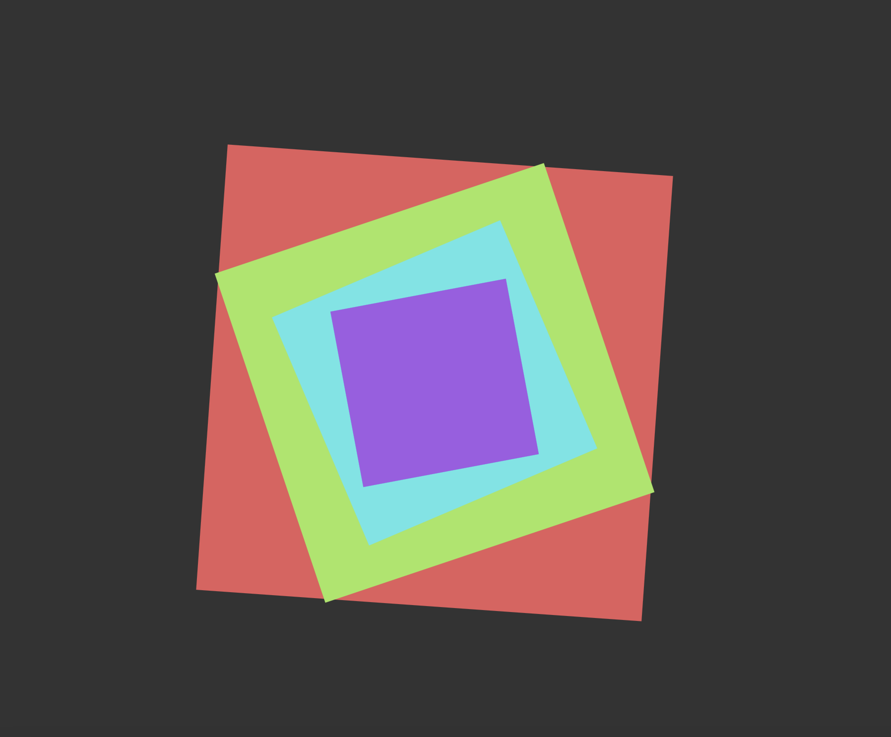
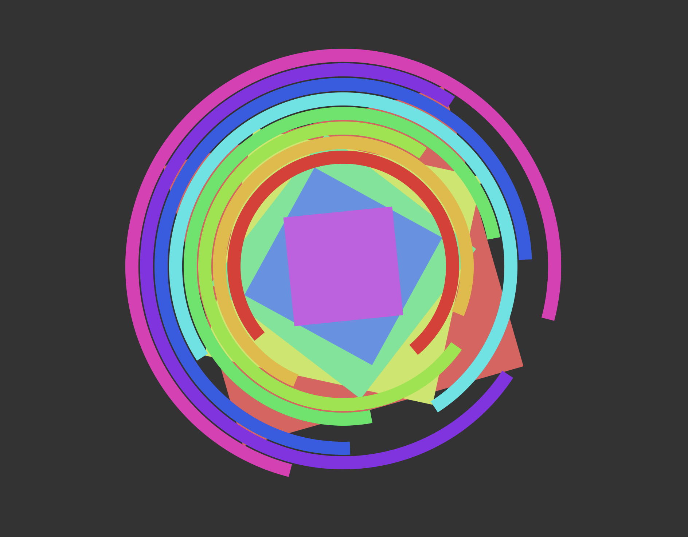
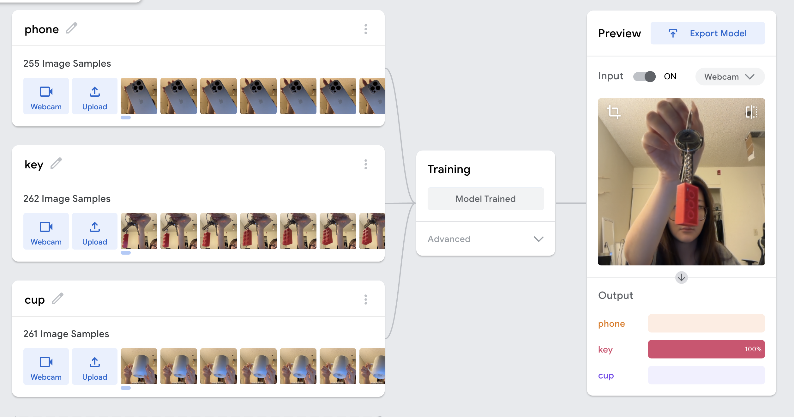
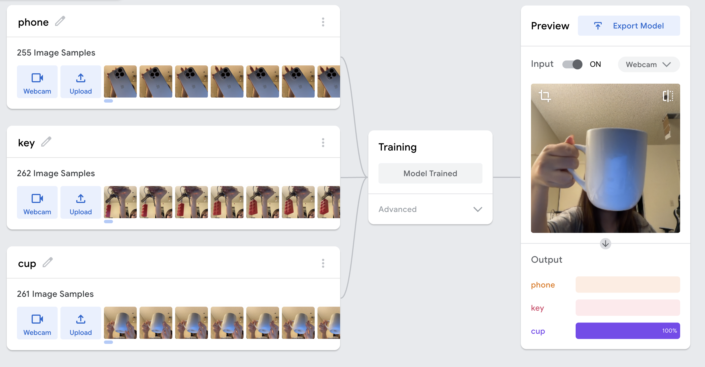
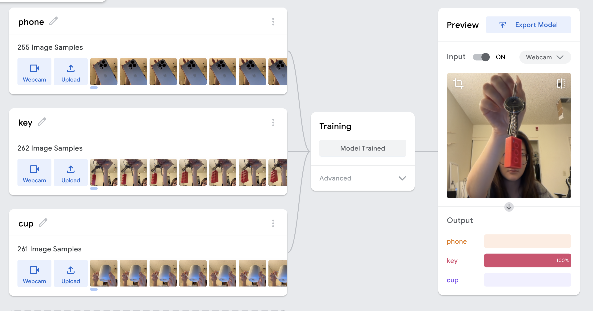
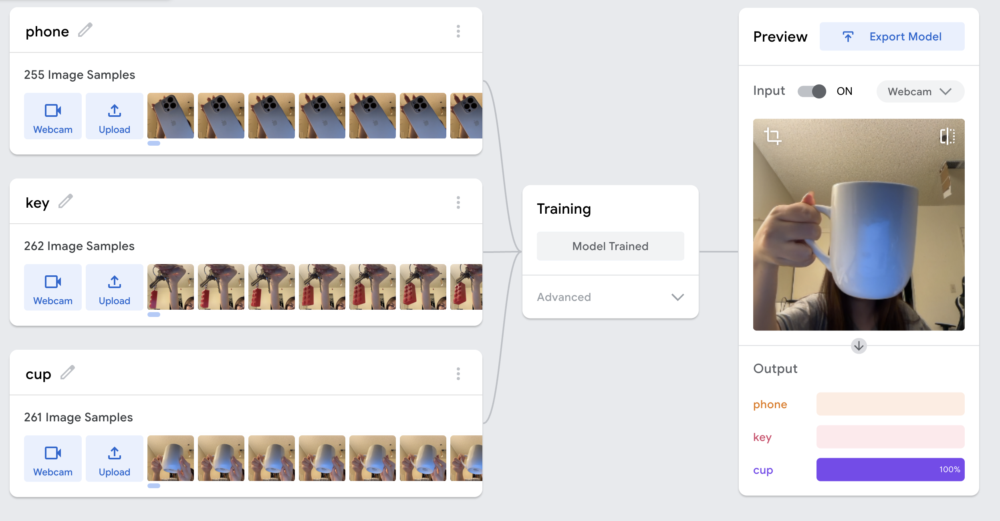
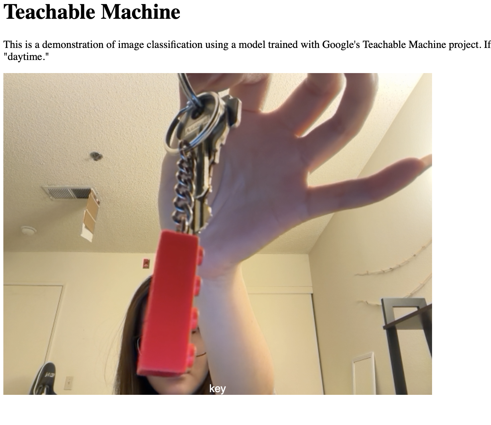
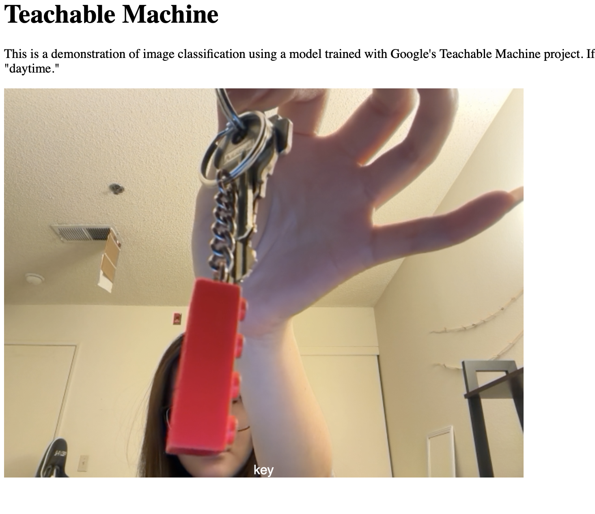

One problem I encountered was that the movement of the circle was not smooth when using random values. The motion looked too sudden and messy. I solved this by using Perlin noise to control the velocity, which made the movement smoother and more natural. Another problem was that the circle sometimes moved out of the canvas. To fix this, I used the constrain() function so the circle always stays inside the screen. I also had an issue with placing the image correctly inside the circle. By using imageMode(CENTER) and drawing the image at the same position as the circle, the image stayed centered while moving.
The most interesting problem was making the movement look natural. Random movement felt unnatural and uncomfortable to watch. It did not match the calm feeling of the images. I solved this by using Perlin noise instead of random numbers. Perlin noise changes slowly, so the movement became smoother and more expressive. This made the animation feel more alive and visually pleasing. VIDEO VIDEO is here

1. This is the initial experiment using only rotating squares. The movement is simple and continuous.
2. I adjusted the sizes and colors of the squares to explore visual balance and layering.

3. Variation was added to the rotation, creating more dynamic and less uniform movement between the squares.

4. Circular arcs were introduced as a second shape, while the squares remained the main focus.

5. More rings were added and animated, increasing the complexity and creating a stronger rhythm between shapes.
6. In the final version, both shapes move with different timing and speeds, forming a layered and de-synchronized motion.
The goal of this project is to model a small interactive system using object-oriented programming and observe how simple rules can create emergent behavior. I chose to build a pond ecosystem with three elements: lotus leaves, frogs, and flies. Each element has a clear role: 1. Lotus leaves provide resting places for frogs 2. Frogs move around the pond and eat flies 3. Flies move randomly and act as food for frogs By connecting these elements, the system shows how relationships between objects can affect the overall behavior of the environment.
I first planned the system by deciding what objects were needed and how they would interact. Each element in the system was turned into its own class: Lotus, Frog, and Fly. 1. Flies move randomly around the canvas 2. Frogs search for nearby flies and move toward them 3. When a frog gets close to a fly, the fly is removed (eaten) 4. After eating, frogs return to the nearest lotus leaf to rest User interaction is added by allowing the user to click the mouse to create new flies, which changes how frogs behave. Emergent behavior appears when multiple frogs and flies are present. Without direct control, frogs naturally compete for food and move between hunting and resting states, creating a dynamic system that changes over time.
I choose three everyday objects to trained my model, which is my phone, a cup, and the key. From the outcomes of the teachable machine, we can see it detected the images 100% correct.
 



 


This pattern recreates the classic SOS distress signal used in Morse code. It consists of three short blinks, three long blinks, and then three short blinks again. I chose this pattern because it is simple, universally recognized, and naturally rhythmic. Short blinks are 200 ms, while long blinks are 600 ms. A 2-second pause separates each repetition.
This pattern imitates a heartbeat. The LED flashes twice quickly and then pauses before repeating. The rhythm feels natural and similar to a human heart. I adjusted the delay time to make the heartbeat feel more realistic. Small timing changes make a big difference in how the rhythm feels.
This pattern is inspired by a simple music beat. The LED follows a four-beat rhythm with short flashes and one longer flash in the middle. I wanted to see how a musical rhythm could be shown using only one LED. Different flash lengths help create a clear beat.
VIDEO VIDEO is here